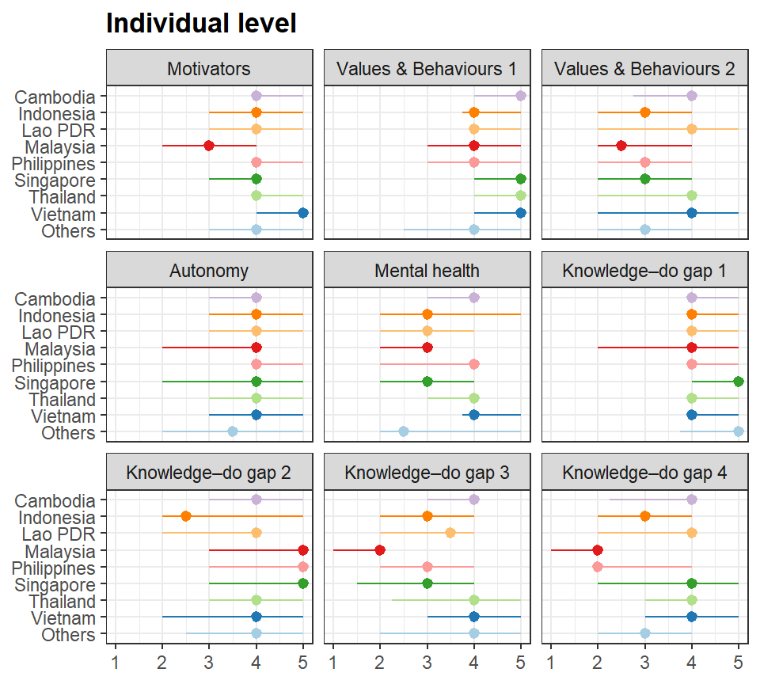
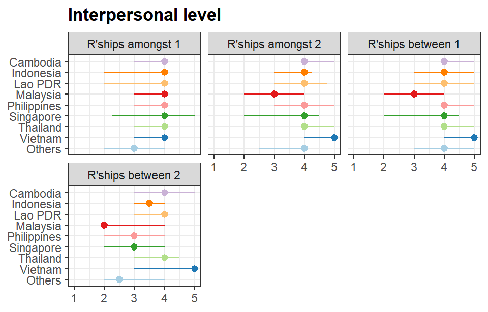
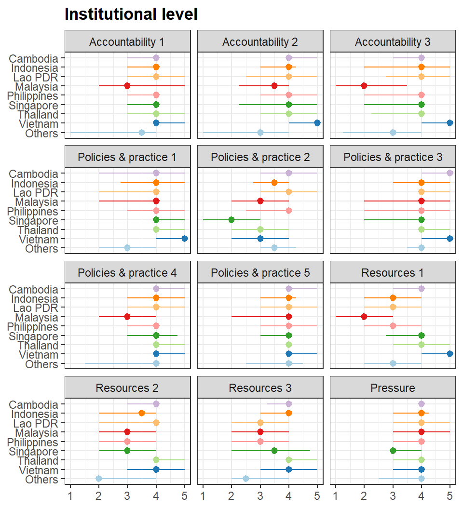
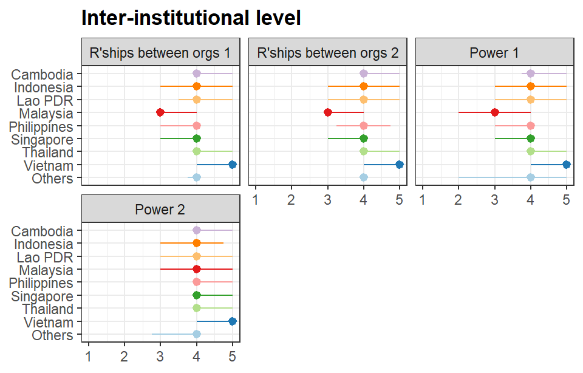
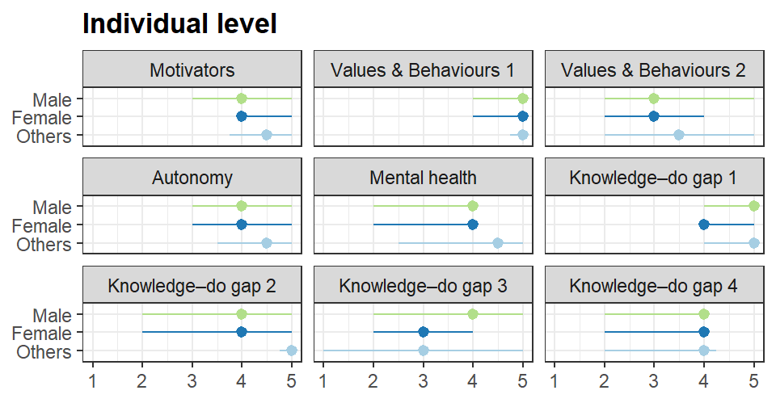
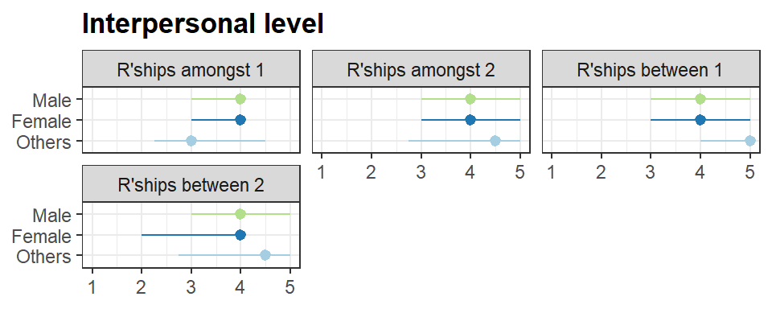
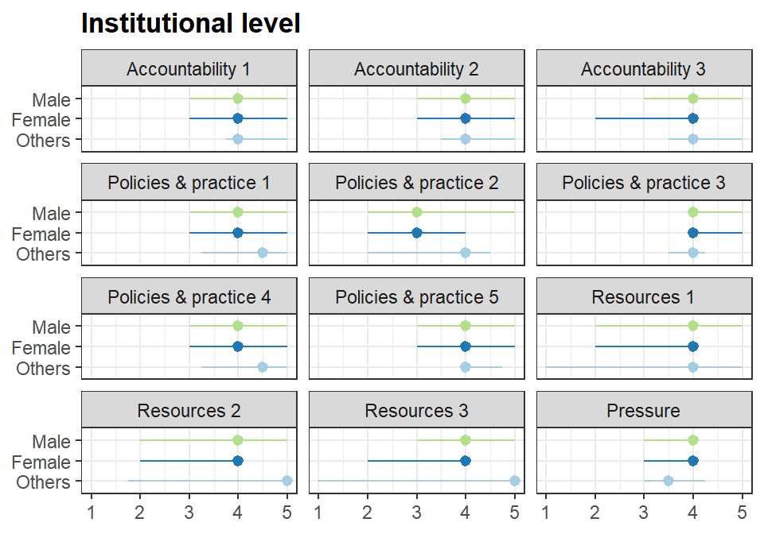
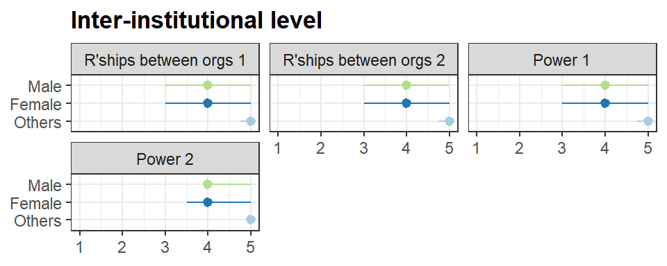

Detailed questions
Comparison by country
Individual level
Overall, respondents from Southeast Asian countries felt less confident about being equally valued compared to their Western or high-income country research colleagues (Values & Behaviours 2). They also reported lower scores on questions regarding whether their mental and physical health needs are adequately supported (Mental health), whether they are fairly compensated for the time dedicated to research (Knowledge-do gap 3) and whether they have sufficient time in their daily schedules to conduct research (Knowledge-do gap 4). Respondents from Indonesia, Lao PDR, and Vietnam expressed low confidence in their English proficiency, which they felt could hinder their ability to conduct research (Knowledge-do gap 2). Malaysian respondents reported more negative perceptions across most questions.
Questions
- Motivators: There is a sense at my organization that researchers enjoy their research activities
- Values & Behaviours 1: At my organization, researchers are held to high standards of ethical research practice
- Values & Behaviours 2: I feel equally valued compared to my Western or high-income country research colleagues
- Autonomy: At my organization, I am given the freedom to pursue research projects that align with my interests
- Mental health: At my organization, individual needs for mental or physical health support are well addressed
- Knowledge-do gap 1: I feel confident that I have the necessary knowledge, skills and experience to conduct research
- Knowledge-do gap 2: My proficiency level in the English language does not affect my experience in conducting research
- Knowledge-do gap 3: At my organization, I feel that I am well-compensated for the time that I allocate for research
- Knowledge-do gap 4: I have enough time in my day-to-day schedule to conduct research
Ordinal logistic regression
Interpersonal level

Questions
- Relationships amongst 1: At my organization, there are sometimes tensions between researchers from different departments, disciplines or countries
- Relationships amongst 2: At my organization, my contribution is fairly recognized (by my seniors) in research outputs such as papers and conference presentations
- Relationships between 1: I feel that my supervisors are supportive by valuing my contributions to research and encouraging me to prioritize research
- Relationships between 2: I am satisfied with the level of research mentorship I currently receive
Institutional level

The majorities of countries are concerning about resources availability, such as there are not sufficient resources to conduct quality research at their organization (Resources 1), the organization may not has specific programs to help new academics (Resources 2), or not having enough support for new or junior researchers to get initial grants or publications (Resources 3).
Questions
- Accountability 1: If I witness inappropriate research or professional conduct in my organization, I would feel confident about reporting it
- Accountability 2: I am confident that my organization can deal with cases of unethical research conduct fairly
- Accountability 3: I am confident that my organization can deal with bullying, harassment, including whistleblowing fairly
- Policies & practice 1: At my organization, there are systems and resources to support conducting research
- Policies & practice 2: My organization prioritizes other activities, such as teaching, over research
- Policies & practice 3: I agree with the level of importance given to publications in high-quality academic journals
- Policies & practice 4: At my organization, there are opportunities for professional development and growth in research
- Policies & practice 5: The research funding my organization receives reflects key priorities in my country/context
- Resources 1: There are sufficient resources to conduct quality research at my organization
- Resources 2: My organization has specific programs to help new academics get their research started and to learn academic skills such as academic writing, literature review, data analysis
- Resources 3: My organization has initiatives to support new or junior researchers to get initial grants or publications
- Pressure: I find it a challenge to keep up with the research expectations of my organization
Inter-institutional level

Countries did not report much concerns about questions in this area.
Questions
- Relationship between organisations 1: I have had an overall positive experience collaborating on research projects with other institutions in Southeast Asia
- Relationship between organisations 2: I have had an overall positive experience collaboration on research projects with other institutions beyond Southeast Asia
- Power 1: In collaboration work, I feel that my organization and my team are considered equal partners to other organizations and teams
- Power 2: In collaborative work, my organization is fairly recognized in research outputs such as papers and conference presentations
Comparison by gender
Individual level

Female and others gender
Interpersonal level

Institutional level

Inter-institutional level

Comparison by career stage
Individual level
Interpersonal level
Institutional level
Inter-institutional level
Comparison by scientific discipline
Individual level
Interpersonal level
Institutional level
Inter-institutional level
Comparison by funding source (with a focus on UK-funded)
Individual level
Interpersonal level
Institutional level
Inter-institutional level
Multivariable analysis
term OR 2.5 % 97.5 % signif
1 countryIndonesia 0.41 0.16 1.03 FALSE
2 countryLao PDR 0.56 0.22 1.39 FALSE
3 countryMalaysia 0.16 0.06 0.43 TRUE
4 countryPhilippines 0.52 0.22 1.25 FALSE
5 countrySingapore 0.49 0.18 1.32 FALSE
6 countryThailand 0.89 0.37 2.09 FALSE
7 countryVietnam 2.49 0.99 6.29 FALSE
8 countryOthers 0.51 0.16 1.67 FALSE
9 genderFemale 1.18 0.79 1.76 FALSE
10 genderOthers 1.52 0.40 6.56 FALSE
11 q5_categoryPrivate and industry 1.91 1.17 3.13 TRUE
12 q5_categoryUK-funded 1.98 0.99 4.04 FALSE
13 q5_categoryOthers 0.61 0.21 1.86 FALSE term OR 2.5 % 97.5 % signif
1 countryIndonesia 0.52 0.22 1.24 FALSE
2 countryLao PDR 0.81 0.34 1.91 FALSE
3 countryMalaysia 0.15 0.06 0.39 TRUE
4 countryPhilippines 0.39 0.17 0.89 TRUE
5 countrySingapore 0.65 0.25 1.69 FALSE
6 countryThailand 0.99 0.44 2.21 FALSE
7 countryVietnam 1.38 0.60 3.17 FALSE
8 countryOthers 0.84 0.25 2.79 FALSE
9 genderFemale 0.70 0.48 1.02 FALSE
10 genderOthers 0.45 0.10 2.08 FALSE
11 q5_categoryPrivate and industry 2.20 1.37 3.53 TRUE
12 q5_categoryUK-funded 1.90 1.01 3.64 TRUE
13 q5_categoryOthers 1.11 0.40 3.07 FALSE